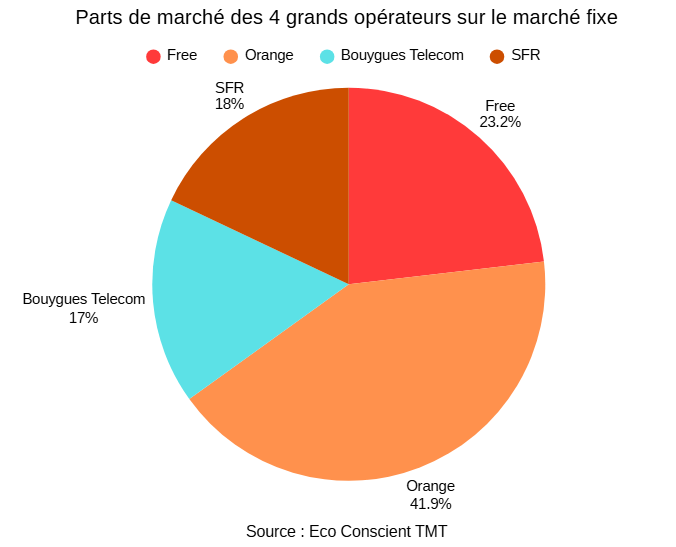
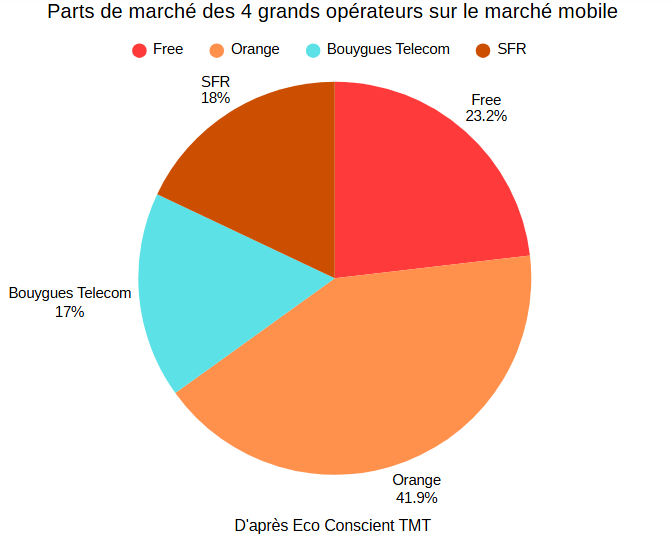
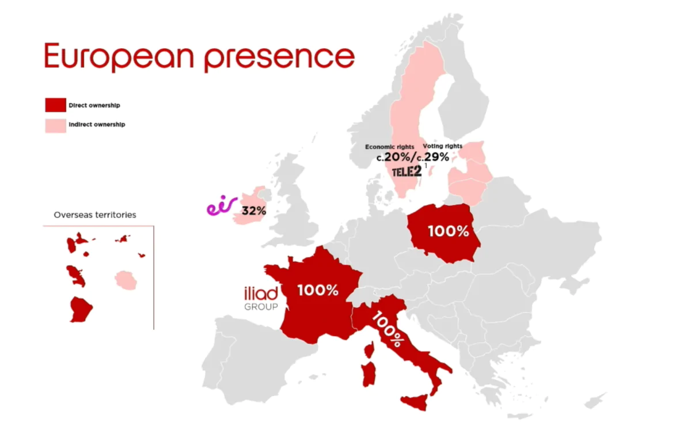
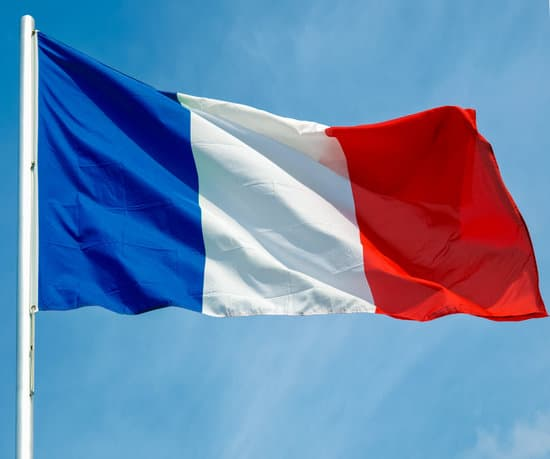
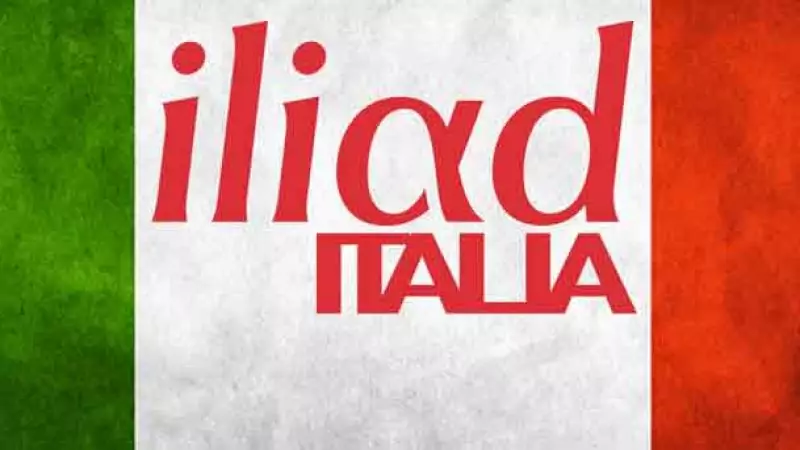
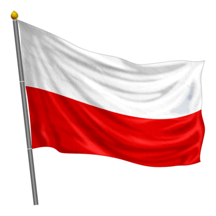

Les parts de marché dans l'internet fixe
Le marché français de l'internet fixe est actuellement divisé entre quatre grands opérateurs : Orange, Free, SFR et Bouygues Telecom. Notons que SFR va être démantelé après son rachat par les 3 autres opérateurs.
Orange domine ce marché avec près de 42 % des abonnements, tandis que Free occupe la deuxième position avec plus de 23 %. SFR et Bouygues Telecom se contentent du reste du marché.
Le fait que Free occupe la deuxième place montre à quel point Free a su s'imposer face aux opérateurs historiques. Sa politique tarifaire, ses offres sans engagement et le développement de ses offres fibre ont notamment contribué à renforcer sa présence sur le marché de l'internet fixe.

Graphique en camenbert présentant les parts de marché des 4 opérateurs sur le marché fixe.
Source : EcoConscient TMC

Graphique en camenbert présentant les parts de marché des 4 opérateurs sur le marché mobile.
Source : EcoConscient TMC
Les parts de marché dans le mobile
Le marché mobile quant à lui est aussi réparti entre les 4 opérateurs et d'ici quelques années SFR disparaîtra. On retrouve donc Free, Orange, SFR et Bouygues Telecom.La répartition est plus équilibrée que sur le marché de l'internet fixe car ici, tout le monde a à peu près la même.
Orange conserve la première place avec environ 29 % des abonnements, mais Free se rapproche fortement avec 27 %. L'écart entre les deux opérateurs est donc relativement faible, tandis que SFR et Bouygues Telecom occupent les positions suivantes.
Cette position est particulièrement remarquable puisque Free Mobile n'est arrivé sur le marché qu'en 2012. En proposant des forfaits à prix très bas et sans engagement, Free a rapidement gagné des parts de marché et est devenu un concurrent majeur des opérateurs historiques.
Le marché professionnel
En plus de ses offres destinées aux particuliers, Free développe également son activité sur le marché professionnel avec Free Pro. L'entreprise propose aux professionnels et aux entreprises des solutions de télécommunication adaptées à leurs besoins, notamment dans les domaines de l'accès à internet, de la téléphonie et des services associés.
Le marché professionnel représente ainsi un axe de diversification pour le groupe. Il permet à Free d'élargir sa clientèle au-delà du grand public et de développer de nouvelles sources de revenus.
L'évolution du chiffre d'affaires
Le chiffre d'affaires (CA) correspond à l'ensemble des revenus générés par une entreprise grâce à la vente de ses produits et services. Son évolution permet notamment d'observer la croissance de l'activité économique d'un groupe.
Le graphique montre une progression importante du chiffre d'affaires du groupe Iliad depuis la création de Free en 1999. Cette croissance s'explique notamment par l'augmentation du nombre d'abonnés, le développement des offres mobiles et internet ainsi que l'élargissement des activités du groupe (cf. Expansion en Europe).
Cette évolution témoigne donc d'une croissance durable de l'activité économique du groupe. Free a progressivement gagné des parts de marché en France tout en développant ses activités à l'étranger, ce qui contribue à augmenter les revenus du groupe.
Il est cependant important de distinguer le chiffre d'affaires de la rentabilité. Une hausse du CA signifie que l'entreprise réalise davantage de revenus, mais elle ne permet pas à elle seule de déterminer si l'entreprise réalise davantage de bénéfices. D'autres indicateurs économiques doivent être étudiés pour mesurer sa performance financière.

Graphique en camenbert présentant les parts de marché des 4 opérateurs sur le marché mobile.
Source : Groupe Iliad

Implantation du groupe iliad en Europe : France, Italie et Pologne.
L'expansion de Free en Europe
Le groupe iliad, maison mère de Free, a progressivement développé ses activités en dehors de la France afin de conquérir de nouveaux marchés européens.
Aujourd'hui, le groupe est principalement implanté en France, en Italie et en Pologne. La carte ci-contre permet de visualiser cette implantation européenne.
Cette expansion permet à iliad de diversifier ses activités, d'augmenter son nombre d'abonnés et de développer son chiffre d'affaires à l'échelle européenne.
La France : le marché historique
La France constitue le marché historique de Free. C'est dans ce pays que l'entreprise a été créée en 1999 et qu'elle a commencé à développer son modèle fondé sur des offres accessibles et sans engagement.
Avec ses activités dans l'internet fixe et le mobile, Free occupe aujourd'hui une place importante sur le marché français des télécommunications (étant 2e opérateur après Orange). Le développement rapide de la fibre et de ses forfaits mobiles lui permet de continuer à augmenter son nombre d'abonnés.
Le marché français reste donc essentiel pour le groupe et constitue la base de son développement international.


L'Italie : un développement rapide
Le groupe iliad s'est implanté en Italie en 2018 avec le lancement de ses offres mobiles. L'objectif était de reproduire une partie de la stratégie développée en France en proposant des offres simples, compétitives et sans engagement.
Cette arrivée a permis à iliad de gagner rapidement des abonnés sur le marché italien et de devenir un nouvel acteur important du secteur des télécommunications.
L'Italie représente ainsi un marché important dans la stratégie d'internationalisation du groupe.
La Pologne : une croissance externe
La présence du groupe iliad en Pologne repose notamment sur l'acquisition de Play, l'un des principaux opérateurs télécoms du pays. Cette opération a permis au groupe de s'implanter rapidement sur un nouveau marché européen.
Contrairement à l'arrivée de Free en Italie, le développement en Pologne s'appuie donc principalement sur une stratégie de croissance externe, c'est-à-dire le développement d'une entreprise par l'acquisition d'autres sociétés.
Cette implantation renforce la présence européenne du groupe et contribue à la diversification de ses activités.

Conclusion
Free s'est progressivement imposé comme un acteur majeur des télécommunications en France grâce à une stratégie fondée sur des offres compétitives, le développement de ses réseaux et une forte présence sur les marchés fixe et mobile.
Cette stratégie a permis au groupe iliad de développer son activité et d'augmenter son chiffre d'affaires tout en gagnant des parts de marché. Le groupe a également poursuivi sa croissance en dehors de la France grâce à son implantation en Italie et en Pologne.
L'entreprise cherche ainsi à poursuivre sa croissance en combinant développement sur ses marchés historiques et expansion européenne. Free est donc passé d'un nouvel opérateur français à un groupe présent sur plusieurs marchés européens.